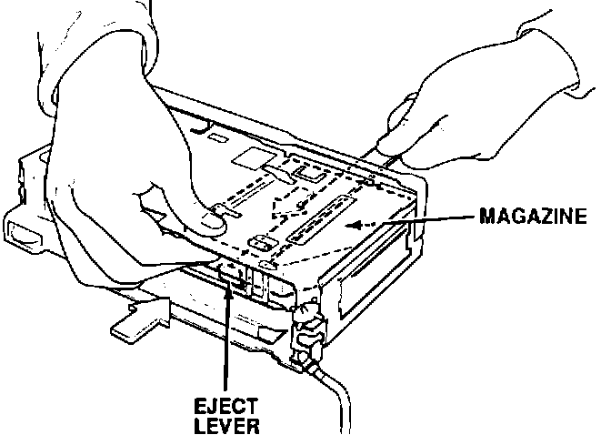
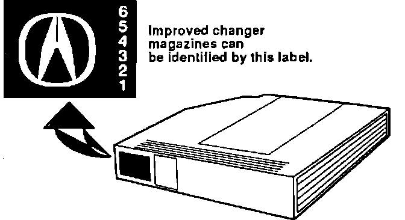

Trunk Unit CD Changer - Magazine Will Not Eject
September 29, 1992YEAR
ALL
MODEL
ALL with OPTIONAL CD CHANGER
VIN APPLICATION
ALL
BULLETIN NO.
92-018
Trunk Unit CD Changer Magazine Won't Eject
PROBLEM
The CD changer magazine will not eject from the changer
CORRECTIVE ACTION
Replace the magazine in the changer, and any other Acura magazines the customers may have, with the improved magazine. See PARTS INFORMATION.
NOTE:
Do not replace the CD changer for this problem. The improved magazine(s) will prevent future jamming.
1. Remove the CD changer from the car.
2. Remove the side covers and the top case.

3. Slide a slim jim or a stainless steel ruler between the lower side of the CD magazine and the changer.
4. Push the eject lever toward the back of the unit while pushing the magazine out of the front opening.
5. Reassemble the CD changer.
6. Reinstall the changer in the car

7. Replace the changer magazine with the new part.
PARTS INFORMATION
CD Changer Magazine
08A06-102-41106
Part numbers are for Reference only.
Check with your Parts Department for latest information.
WARRANTY CLAIM INFORMATION
In warranty:
The normal warranty applies.
Out of warranty:
Any repair performed after warranty expiration may be eligible for goodwill consideration by the District Service Manager. You must request consideration, and get the DSM's decision, before starting work.
Operation number: 011130
Flat rate time: 0.5
Failed P/N: 08A06-102-41106
Defect code: 030
Contention code: F36